Half a year of reading
On realising the problem
Six months ago I was shuffling around in my apartment preparing bags and boxes for my first ever campervan holiday. Our plan was ambitious, and extremely exciting. Me, my husband and our dog Otto were going from Konstanz to Lapland in two weeks.
Of course, not knowing anything about what we might need, we started collecting our stuff well in advance. Clothes (few), food (a lot), dog necessities (Otto was on some heavy medication back then) and anything related to camping, fishing and living in the wild (travel soap, I am looking at you).
The most exciting part about our travel plan was to be “web-free” for two whole weeks. Being off-grid and spend some time focusing on family quality time was exactly what I needed (cats excluded, but I think they also might have needed some off time from us, so all was good). At some point, between packing notebooks and drawing supplies, I realised I was missing an important part of an off-grid family holiday: books.
It might sound weird, but the thought of books didn’t really come in my mind as early as it should have. That made me think: at the time, July 2025, I hadn’t read a book in over a year. Well, I tried, but I never managed to finish one. In 12 months. Thinking about it now makes me feel uneasy. I used to love reading. I used to inhale books like I inhale oxygen. And for a whole year I didn’t.
Honestly, it’s not as surprising as it might be. Exactly a year before this idyllic holiday, I submitted my PhD dissertation, a great personal and professional milestone, that left me completely empty minded, and in need of a break from everything slightly intellectual. For the longest time I abhorred the idea of reading like one would abhor the idea of cleaning the toilet with a toothbrush. I was just associating it with work and boring scientific articles, and it made me forget how much I actually enjoy reading.
But that was in the past! No time like the present to get back to what makes you truly happy. So I packed my books with the idea of going back to inhale literature. Nothing easier.
For my Lapland holiday I packed 7 books. For two weeks.
My husband was, in a word, skeptical.
“You are never gonna read 7 books”.
I was outraged. If I wanted, I could read twice as much. I read the whole Harry Potter and the Halfblood Prince in 6 hours (true story).
Spoiler alert: I did not read seven books during that holiday, he was right. But we are not gonna tell him that.
Being wrong is never fun, but somewhere between the Arctic Circle and the drive back to Konstanz, I stopped looking at my booklist as a series of intellectual failures and started seeing it as recovery vitamins. I decided right then to document this ‘going back to reading’ climb as a slow, slightly messy, adult healing journey.
The book list
This is what the last five months of regaining my brain looked like. I think it’s apt, since usually the end of the year brings mostly thoughts about future resolutions, instead of focusing on what we accomplished.
When writing the draft of this blogpost back in August, I wanted to focus beyond the titles and plot, but also on my growth, or internal decision when choosing one book over another. I like to think that I’ve grown in the past 6 months, even if it might be wishful thinking. So you will find a numbered list of books. I decided to order the books based on when I started them, but the actual number on the list corresponds to when I finished the book. If the numbers jump around, just assume my brain was taking a scenic route. We’re scientists here: we love a non-linear dataset. No spoilers appear here (except perhaps for Dune, but the statute of limitations on a fifty-year-old series has surely expired). As for the ratings, they are purely a reflection of my own debatable taste.
1. “How to become the Dark Lord, and die trying” - Django Wexler
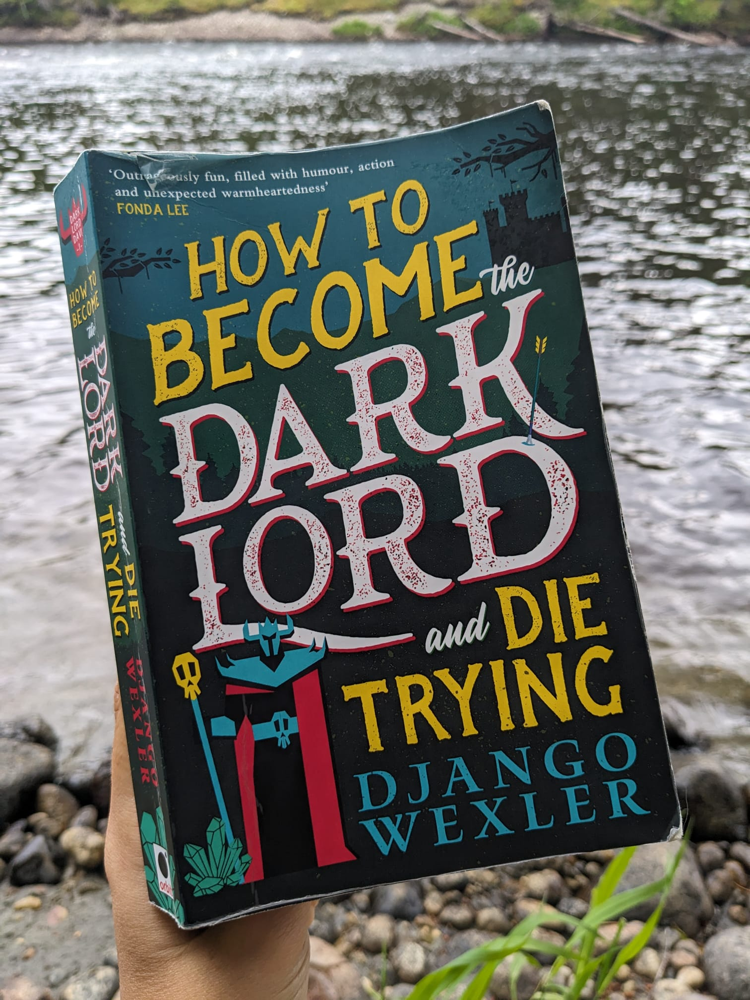
If you are on a reading rut and feel like you’re never going to get into the reading pace ever again, read this book and change your mind. That is what it did for me. I absolutely loved it. I loved the main character, I loved the way it’s written, I love the slight self-deprecating, and at the same time “misunderstood genius” narrative that just spoke to my psyche. And I loved the footnotes. I am not going to spoiler. I will just say that this book helped me with the quest of going back to reading. It was the perfect way to ease in. I will leave this extract. Because why not.2. “Everyone wants to rule the world, except me” - Django Wexler
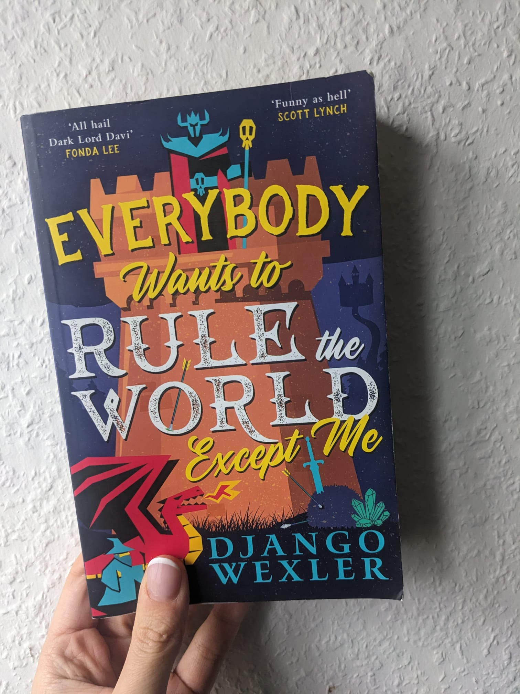
After the first book, the momentum was high. It’s the kind of story that reminds you that being the hero is usually a logistical nightmare and rarely worth the effort.7. “Unnatural Magic” - C. M. Waggoner
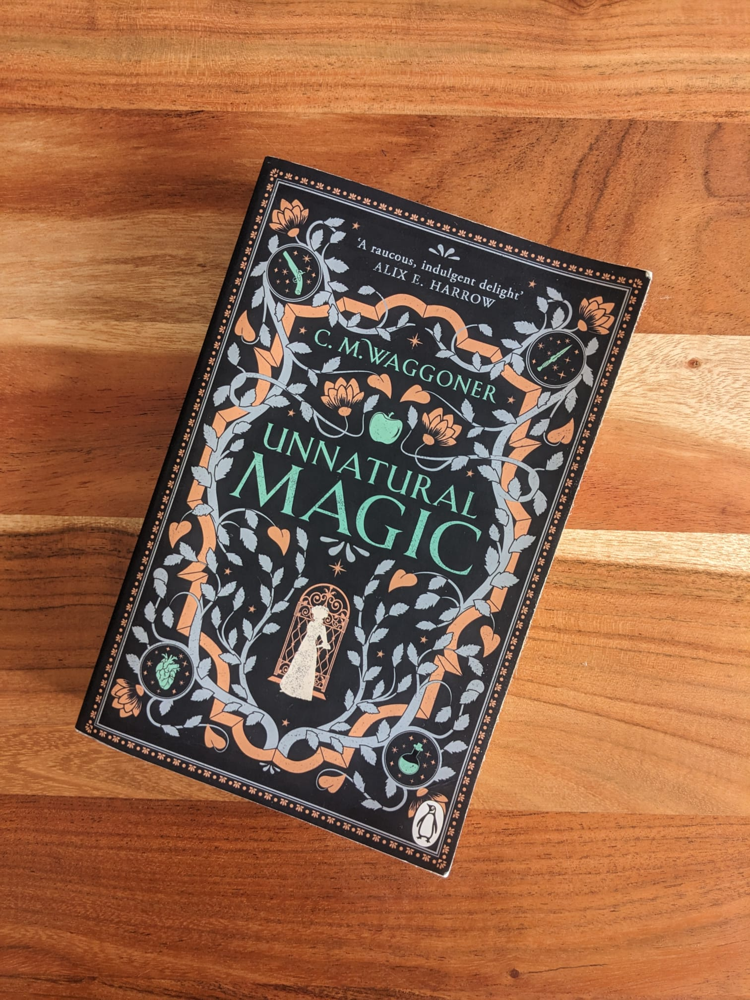
This book was heavy. A 180-degree turn from the previous two, which were so fun to read. The reason why eludes me, though. The plot was okay and the horror-mystery setting was well described. Was it maybe the Mary Sue character? She was quite boring, honestly: beautiful AND smart. It’s hard to root for someone who never struggles.3. “Demon hunting society” - C. M. Waggoner
A book with such a twist. If I had to draw a plot of this book, it would be a Gaussian curve: a boring beginning, a peak of “oh, there was a reason for that, cool!”, and a quite flat ending. The author’s writing style is really nice and enjoyable, but I would not buy it for the plot alone.
5. “Dune” - Frank Herbert
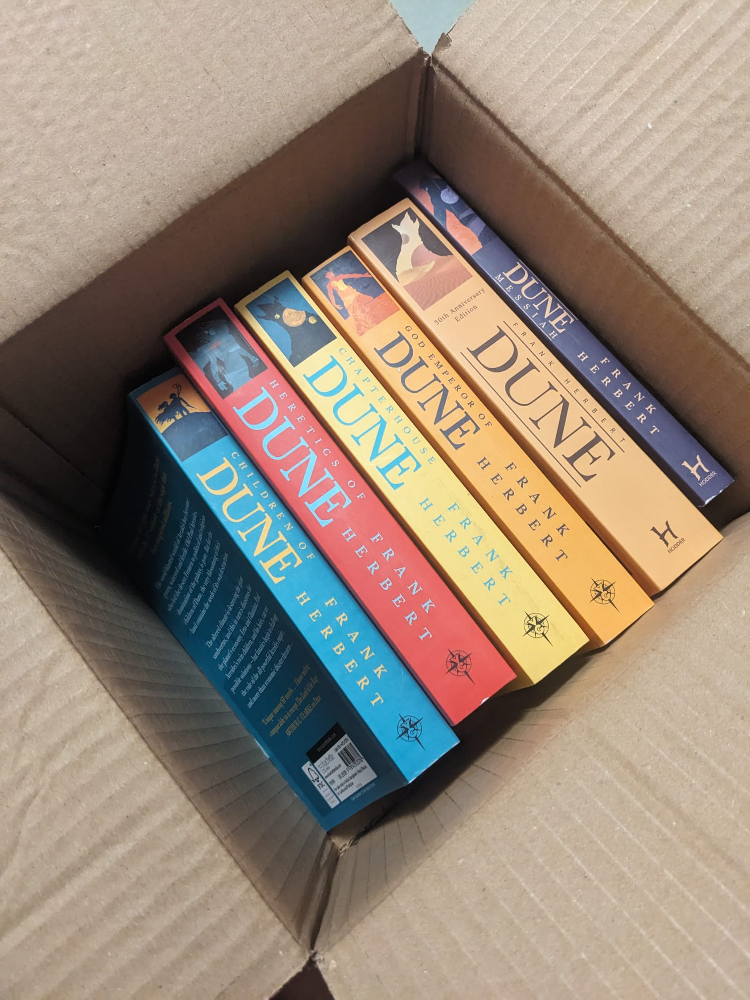
This was one of the books mentioned in my introduction—one I started during the “slump” year but never managed to finish. Honestly, I do not know how I failed back then, because I love everything about this book. So much so that I bought the whole series.4. “Come Rain, Come Shine” - Kazuo Ishiguro
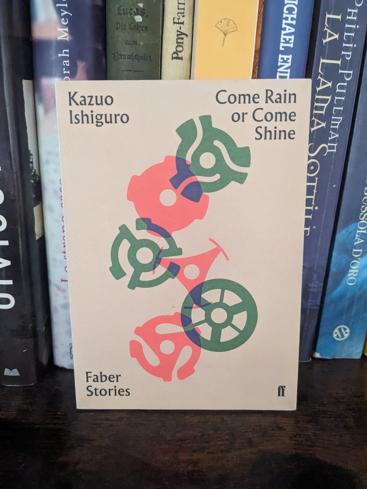
Why did I think this was a poetry book? Maybe the pocket size, or the fact that it’s from Kazuo Ishiguro? Why do I assume Kazuo Ishiguro would write poetry? Maybe because the prose is so delicate it might as well be verse.
6. “Dune Messiah” - Frank Herbert
Feels like a transition book in the series. It was okay. Funny that the most interesting character is Duncan Idaho.
11. Hotel Avocado - Bob Mortimer
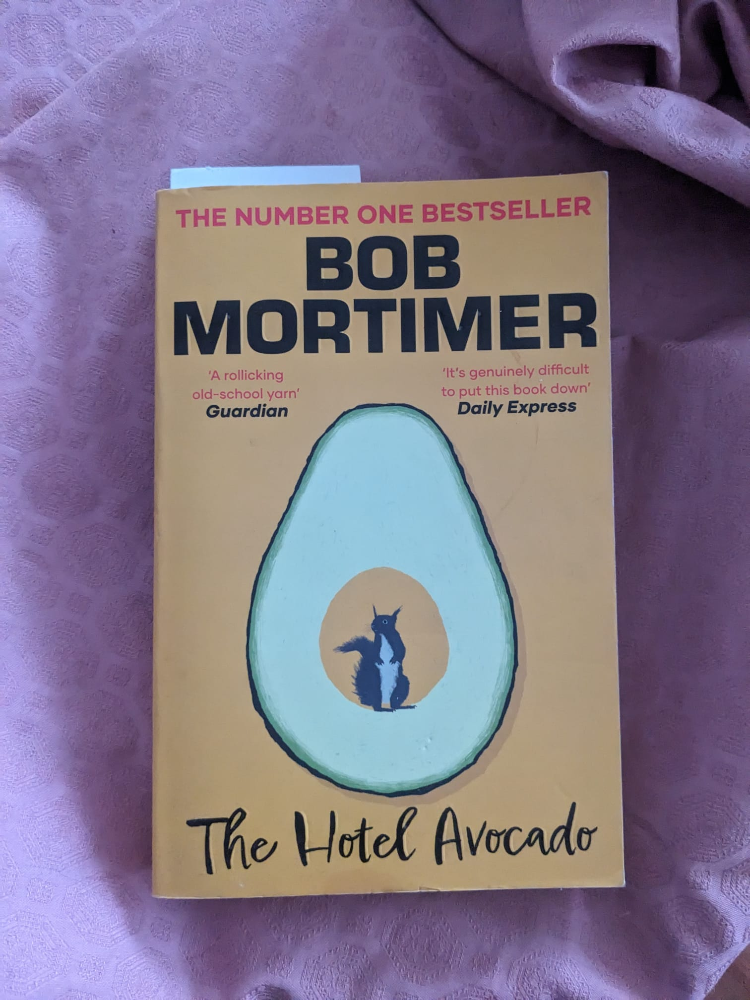
This is a classic airport book. I love buying books at the airport, because I find my good share of English books (I live in Germany, the English choice in bookstores is relegated to three shelves, half-filled with classics). That said: how is it possible to read a book where you hate every single character. All of them, and for different reasons. That shouldn’t be possible, yet here we are.13. Interior: Chinatown - Charles Yu
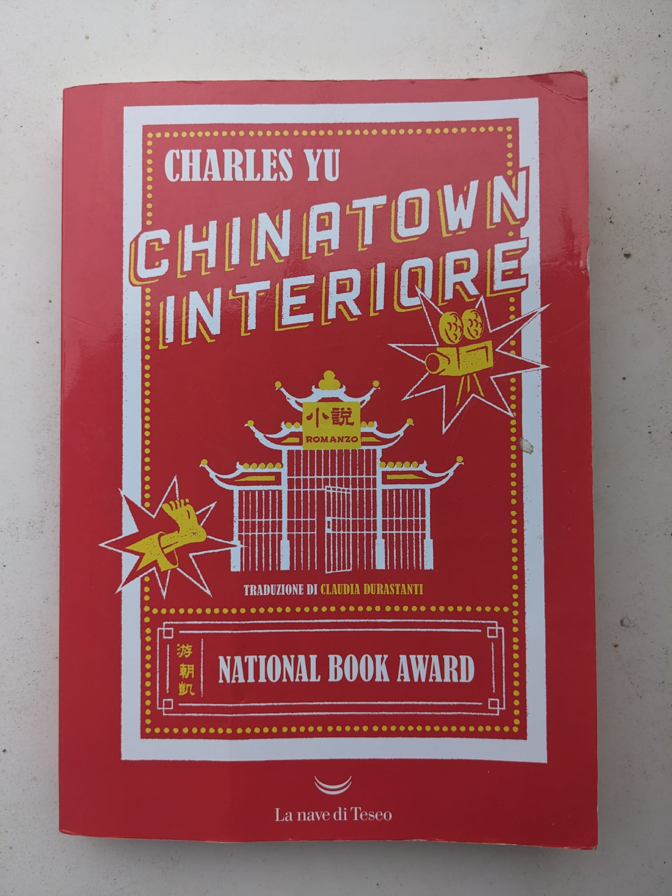
Did you know that there is a series from this book on Disney+? I discovered it by chance while scrolling, and the title reminded me I’ve had this on my shelf since ages (2023, probably) Well, the book is great. I don’t know about the series yet, but Jimmy O. Yang is the lead, so I’m already hooked.
The cats books (Italian Purchases)
 During a trip in Italy to visit my family, I bought a bunch of books on a whim. Without realising it, I bought them all with a common theme, and my mom laughed a lot when she noticed. “You are a cat person now” she laughed “like when you were a kid”. I would like to say that I didn’t buy them because there’s a cat in the cover. But I could be lying. They are also all written by award-winning women.
During a trip in Italy to visit my family, I bought a bunch of books on a whim. Without realising it, I bought them all with a common theme, and my mom laughed a lot when she noticed. “You are a cat person now” she laughed “like when you were a kid”. I would like to say that I didn’t buy them because there’s a cat in the cover. But I could be lying. They are also all written by award-winning women.
9. Una stanza per Momoko (Ora ora de hitori igu mo) - Chisako Wakatake
A nice story, but the focus is on growing old. I’m still too hip and young to relate—or so I thought right before my knee made a horrible cracking sound.
10. Vengo io da te (I’ll come to you) - Rebecca Kaufmann
An interesting report on an extended family’s “year in the life.” I still haven’t figured out why there was a cat on the cover, other than as a trap for people like me.
12. La cura del silenzio (Counsel Culture) - Kim Hye-jin
The “slow healing” from public shaming in this book felt incredibly accurate. And it mostly involved feeding street cats and walking the city at night, which is relatable. I also find the English title incredibly witty. Right after reading this book I shipped it to my mom (she liked it too!)
14. Un gatto per i giorni difficili (We’ll prescribe you a cat) - Syou Ishida
This is likely my favourite out of the cats books. An extremely weird take on mental health, and a strange premise all together. That said, it;s surprisingly comforting and fun!
15. Il castello dei destini incrociati (The Castle of Crossed Destinies) - Italo Calvino
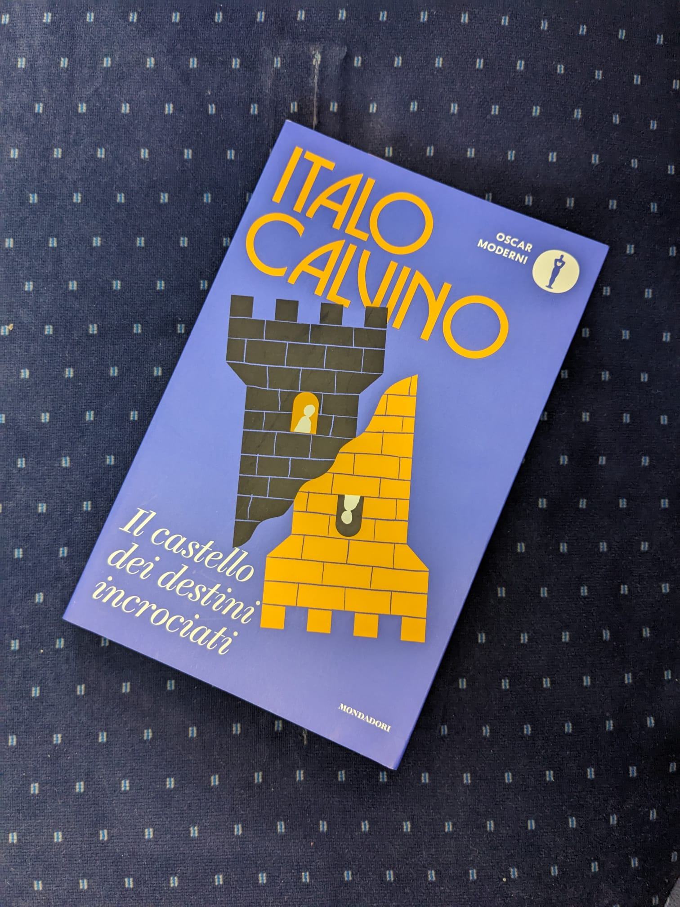
The book is great, but the best part of this edition was the 49-page preface about Italo Calvino. I say this, because I know Italo Calvino’s books. I grew up as a child with some of its most famous tales, I studied some in high school, others I just stumbled upon during life. How is it possible that I still find some that I haven’t read yet? But I do, and it gives me the same feeling as opening a can of butter cookies and finding cookies in it, and not buttons.19. Marigold Mind Laundry - Jungeun Yun
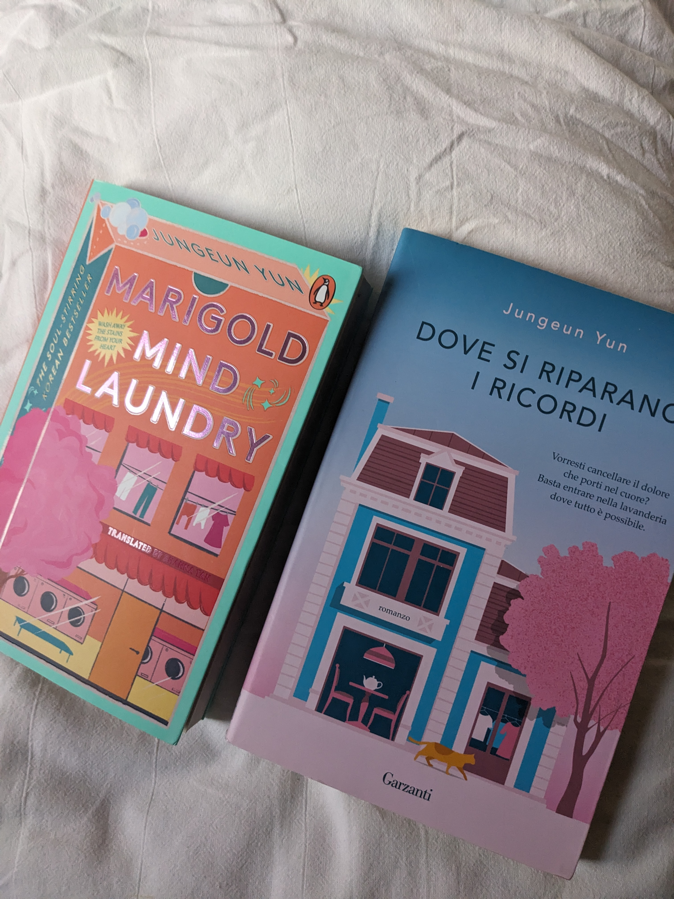
I liked the idea so much, but I think that I fantasized about this a bit too much before reading the book. Probably I was expecting something similar to “Before the coffee gets cold”, but it wasn’t. It’s not necessarily a critique, I guess that the overall magical feeling was over the top for me. (disclaimer: the picture shows both the English and Italian version, and there’s a funny reason for it! I brought this book with me during a trip with some of my besties, and one of them had the exact same book with her!).16. Children of Dune - Frank Herbert
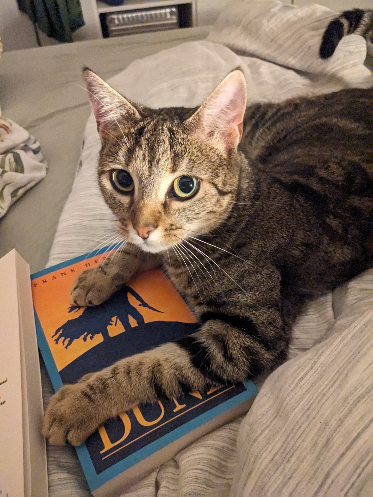
The suspense is killing me. Is the Preacher Muad’Dib? Can Alia fight the Baron? Is Jessica betraying everyone? And seriously, what the heck is wrong with Duncan? (Lyn was trying to save me from reading this book, bless her heart).17. Thursday Murder Club - Richard Osman
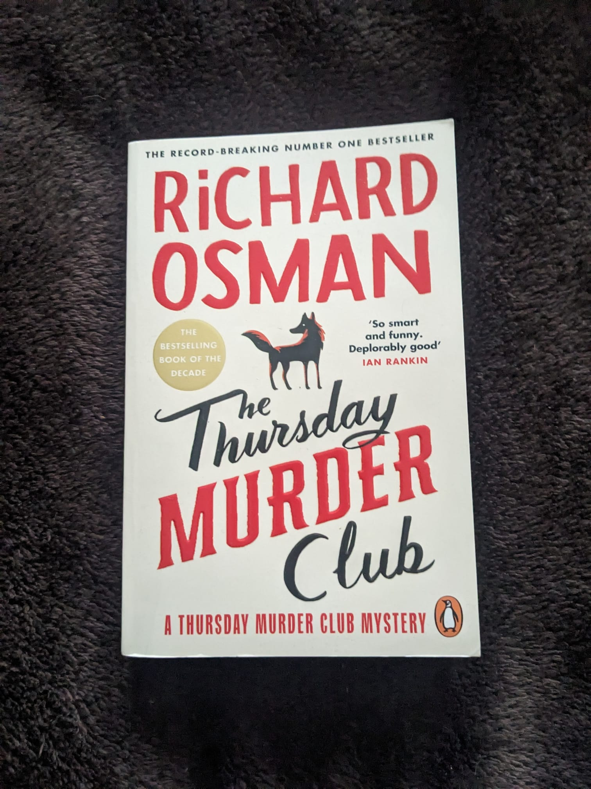
Retirees solving cold cases in a retirement village. It is as good as it sound. I bought the second book of this series and it will be one of my first reads on 2026!
18. “The survivor who wants to die at the end” - Adam Silvera
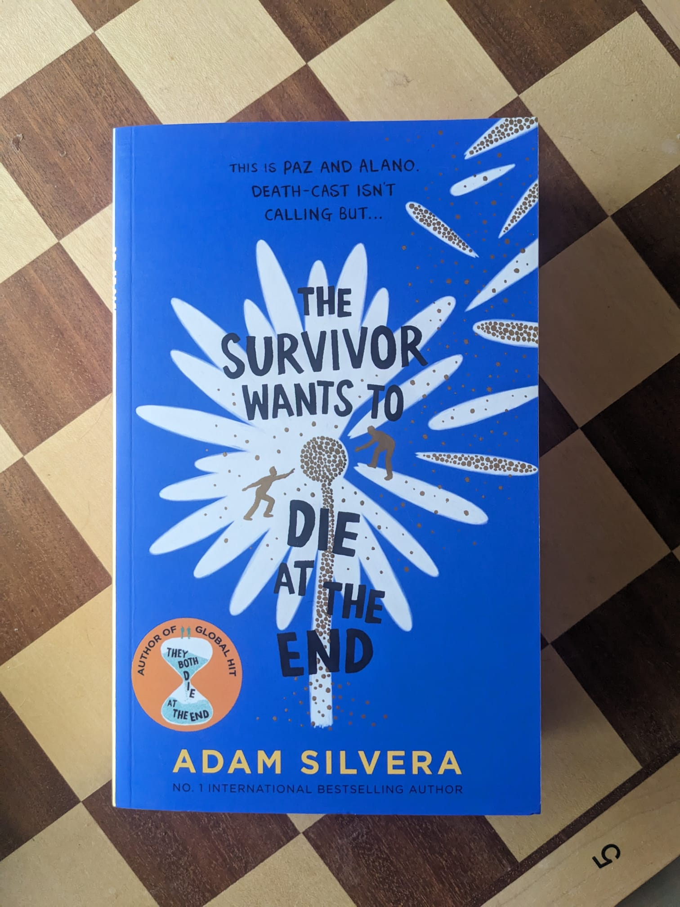
I saw this at the airport right after I got Hotel Avocado. I grabbed it without even thinking because I already knew the universe from the previous books. Adam Silvera has this way of making you question everything you think you know about life. I loved the first book so much that I actually made a conscious choice not to go near this volume until I felt mentally sturdy enough to handle the weight of it. It was a good choice.
Looking back at this list, the numbering is a disaster. It’s a tangle of overlapping narratives, for example finishing 4 books before book seven (even if I started them after). The whole thing looks like a dataset that’s been through a blender.
What this experience taught me is that ‘going back to reading’ is a zigzag. Reading one book after the other is how I always perceived my reading practice, and this is absolutely not what’ I am seen’s happening in this post. Or maybe, that’s how I always approached my bookshelves, but I never realized because i was not documenting the experience.
The ‘reading rut’ didn’t end with a grand epiphany. Actually, I’m not even sure I can say it’s ‘over’ in the way a project ends. I’m not ending 2025 with a grand lecture about the life-changing power of literature. I don’t have a reading challenge for 2026 or a color-coded dashboard for my goals.
But I do have the stack of book by the bed once again, and a dog who, to be fair, couldn’t care less about my intellectual recovery as long as my hand is still free for belly rubs.
I’ve just stopped being the person who ‘used to like’ reading.
Comments
Leave a reply
To protect anonymous submissions from spam, this site uses Cloudflare Turnstile.